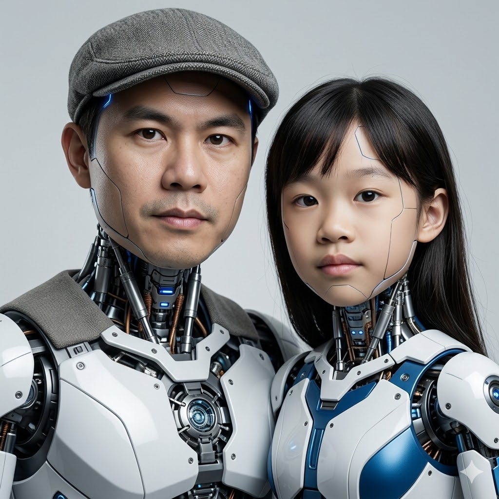

Chatri Khatfan is a technology leader with a strong track record in engineering management, telecommunications, and advanced computing systems. His career spans leadership roles across Thailand and Japan, where he has consistently delivered high-impact technical solutions and led complex operational environments.
He has held senior management positions at Thai Audiotex Limited and TAS Mobile Limited, where he advanced into top-level leadership and oversaw large-scale technical operations. His international experience includes serving as Project Manager at Locus Telecommunications Inc., further strengthening his global perspective in system development and project execution.
Since 2010, he has been Co-Founder and Technical Director of Utel Corporation (Japan), where he leads technical strategy, system architecture, and product development initiatives, driving innovation across telecommunications and emerging technologies.
Bachelor of Engineering in Electrical and Computer Engineering from Queensland University of Technology (QUT), with postgraduate studies in Computer Systems Engineering at the University of Queensland (UQ). His academic background was supported by scholarship achievement, reinforcing both technical depth and international exposure.
Currently focused on applying artificial intelligence and hybrid quantum-classical computing to real-world challenges. His work includes predictive analytics, computer vision, intelligent automation, and advanced system optimization aimed at improving efficiency, scalability, and decision-making in complex environments.
Chatri combines deep technical expertise with strategic leadership, enabling him to bridge complex engineering challenges with practical business outcomes. He is recognized for building robust systems, leading multidisciplinary teams, and translating advanced technologies into scalable, real-world solutions.
C / C++ · Python · Java · Embedded Systems · IoT · Cloud Infrastructure · AI/ML Frameworks · Network Systems · System Integration